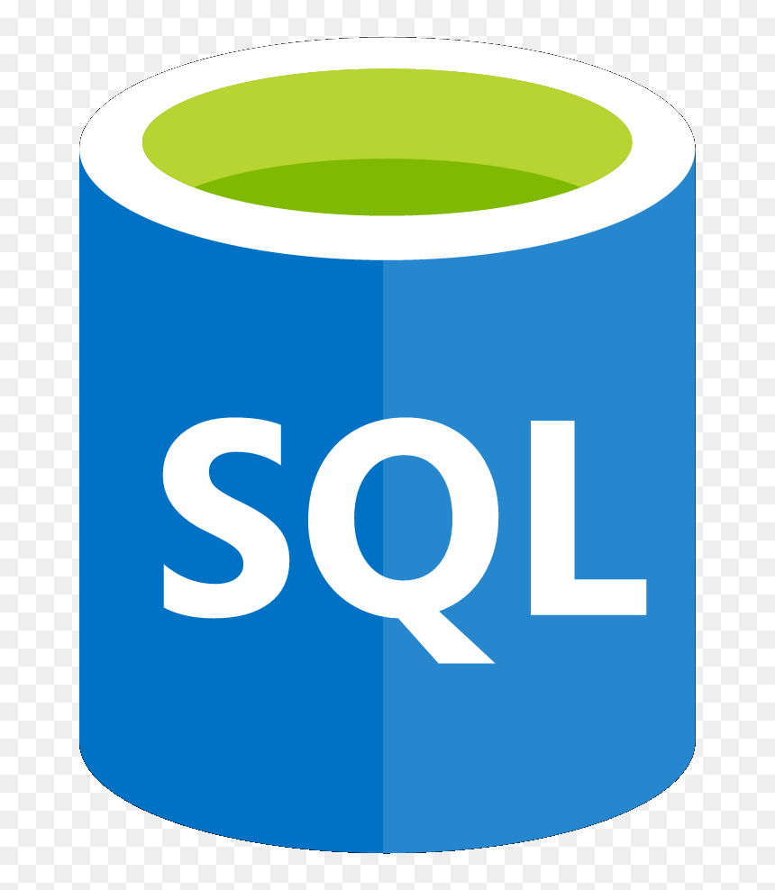

Construindo soluções reais atráves de código
Desenvolvedor focado em criar experiências digitais excepcionais, tornando ideias em realidade.

Projetos
Minhas Habilidades
Frontend
Backend
Banco de Dados

Ferramentas
Sobre mim
Estudante de ADS com cerca de 3 anos de dedicação à programação, focado em construir soluções que aliam lógica estruturada e impacto real. Minha trajetória é marcada pela versatilidade: trago a disciplina e o rigor, com prazos que desenvolvi no setor administrativo industrial, somados à experiência de liderança e à comunicação clara que adquiri ao coordenar projetos de inclusão digital para idosos. Atualmente, foco em organizar e documentar meu ecossistema de projetos no GitHub, priorizando sempre a arquitetura e a qualidade da entrega final.
Destaques rápidos
- 🎓Cursando ADS (Unisanta)
- 🏭Experiência em ambiente corporativo/industrial
- 🤝Experiência em voluntariado de inclusão digital à 3ª idade